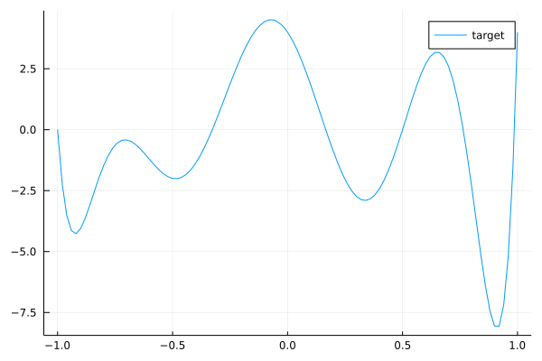
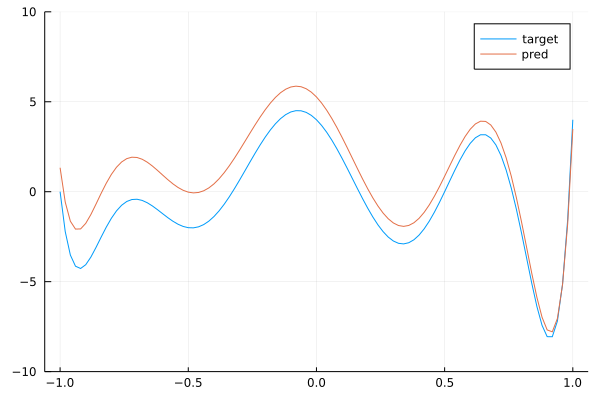
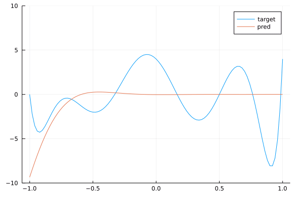

author: Marc Lelarge, course: dataflowr, module: Convolutional neural network
date: June 8, 2021
In the module on CNN, we presented the convolutional layers as learnable filters. In particular, we have seen that these layers have a particular form of weight sharing (only the parameters of the kernel need to be learned). The motivation for restricting our attention to this particular weight sharing comes from a long history in signal processing. Here, we would like to recover the intuition for convolutions from first principles.
So let's pretend, we do not know anything about signal processing and we would like to build from scratch a new neural network taking as input an image and producing as output another image. For example in semantic segmentation, each pixel in the input image is linked to a class as shown below (source: DeepLab): 
Clearly in this case, when a object moves in the image, we want the associated labels to move with it. Hence, before constructing such a neural network, we first need to figure out a way to build a layer having this property: when an object is translated in an image, the output of the layer should be translated with the same translation. This is what we will do here.
Here we formalize our problem and simplify it a little bit while keeping its main features. First, instead of images, we will deal with 1D signal \({\bf x}\) of length \(n\): \({\bf x}=(x_0,\dots, x_{n-1})\). Now translation in 1D is also called a shift: \((S{\bf x})_{i} = x_{i-1}\) corresponds to the shift to the right. Note that we also need to define \((S{\bf x})_0\) in order to keep a signal of length \(n\). We will always deal with indices as integers modulo \(n\) so that \(x_{-1} = x_{n-1}\) and we define \(S{\bf x} = (x_{n-1}, x_0, \dots, x_{n-2})\). Note that we can write \(S\) as a \(n\times n\) matrix:
\[ S = \left( \begin{array}{ccccc} 0&\dots&\dots&0&1\\ 1&\ddots&&&0\\ 0&1&\ddots&&\vdots\\ \vdots &\ddots&\ddots&\ddots&\\ 0&\dots&0&1&0\end{array}\right) \]The mathematical problem is now to find a linear layer which is equivariant with respect to the shift: when the input is shifted, the output is also shifted. Hence, we are looking for a \(n\times n\) matrix \(W\) with the shift invariance property:
\[ WS=SW. \]There is a simple way to approximate a shift invariant layer from an arbitrary matrix \(W\): start from \(W\) and then make it more and more shift invariant by decreasing \(\|WS-SW\|_2^2\). When this quantity is zero, we get a shift invariant matrix.
Here is a gradient descent algorithm to solve the problem:
\[ \min_W \frac{\|WS-SW\|_2^2}{\|W\|_2^2}. \]coded in Julia:
using LinearAlgebra, Zygote, Plots
const n = 100
S = circshift(Matrix{Float64}(I, n, n),(1,0))
function loss(W)
norm(W*S-S*W)/norm(W)
end
function step!(W;lr=0.003)
# computing current loss and backprop
current_loss, back_loss = pullback(w -> loss(w),W)
# computing gradient
grads = back_loss(1)[1]
# updating W
W .-= lr .*grads
end
W = randn(n,n)
W ./= norm(W)
# producing the gif
@gif for i=1:10000
step!(W)
heatmap(W,clims=(-0.03,0.03),legend=:none,axis=nothing)
end every 100Below is the corresponding heatmap showing the evolution of the matrix \(W\) when we solve this problem by a simple gradient descent and starting with pure noise: 
We see that the final matrix has a very strong diagonal structure and we show below that this is the only possible result!
Given a vector \({\bf a}=(a_0,\dots, a_{n-1})\), we define the associated matrix \(C_{\bf a}\) whose first column is made up of these numbers and each subsequent column is obtained by a shift of the previous column:
\[ C_{\bf a} = \left( \begin{array}{ccccc} a_0&a_{n-1}&a_{n-2}&\dots&a_1\\ a_1&a_0& a_{n-1}&&a_2\\ a_2&a_1&a_0&&a_3\\ \vdots&&\ddots&\ddots&\vdots\\ a_{n-1}&a_{n-2}&a_{n-3}&\dots&a_0 \end{array}\right). \]Note that the \(ij\)'th entry of \(S\) is given by \(S_{ij} = \mathbb{1}(i=j+1)\) (remember that indices are integer modulo \(n\)). In particular, the left (right) multiplication by \(S\) amounts to row (column) circular permutation, so that we easily check that for any circulant matrix \(C_{\bf a}\), we have \(C_{\bf a} S= SC_{\bf a}\).
Now to finish the proof of the proposition, note that
\[ (SW)_{ij} = \sum_\ell S_{i\ell} W_{\ell j} = W_{i-1,j}\\ (WS)_{ij} = \sum_\ell W_{i\ell}S_{\ell i} = W_{i,j+1}, \]so that we get
\[ W_{i-1,j} = W_{i,j+1} \Leftrightarrow W_{i,j} = W_{i-1,j-1} \Leftrightarrow W_{ij} = W_{i+k,j+k}. \]Hence the matrix \(W\) needs to be constant along diagonals which is the definition of being a circulant matrix:
\[ W_{ij} = W_{i-j,0} = a_{i-j}, \]where \({\bf a}\) is the first column of \(W\), i.e. \(a_i = W_{i,0}\).
What is the connection with convolution? Well, note that \((C_{\bf a})_{ij} = a_{i-j}\) so that we have for \({\bf y} = C_{\bf a} {\bf x}\):
\[ y_j = \sum_\ell (C_{\bf a})_{j\ell}x_\ell = \sum_\ell a_{j-\ell}x_\ell, \]which is the definition of a 1D-convolution:
\[ {\bf y} = {\bf a} \star {\bf x} \Leftrightarrow {\bf y} = C_{\bf a} {\bf x}. \]It is now easy to check that the product of two circulant matrices is another circulant matrix and that all circulant matrices commute. This last fact has important consequences. We illustrate it here by presenting a simple general result: consider a matrix \(A\) with simple (non-repeated) eigenvalues so that
\[ A {\bf v}_i = \lambda_i {\bf v}_i , i=0,\dots , n-1, \text{ and } \lambda_i \neq \lambda_j, i\neq j. \]Now if \(B\) commutes with \(A\), observe that
\[ A (B {\bf v}_i) = B (A{\bf v}_i) = \lambda_i B {\bf v}_i, \]so that \(B v_i\) is an eigenvector of \(A\) associated with eigenvalue \(\lambda_i\). Since those eigenvalues are distinct, the corresponding eigenspace is of dimension one and we have \(Bv_i = \gamma v_i\). In other words, \(A\) and \(B\) have the same eigenvectors. If \(V\) is the \(n\times n\) matrix where the columns are the eigenvectors of \(A\): \(V = ({\bf v}_0,\dots, {\bf v}_{n-1})\), then we have
\[ AV = V\text{diag}(\lambda_0,\dots,\lambda_{n-1}), \]and \(V^{-1}AV = \text{diag}(\lambda_0,\dots,\lambda_{n-1})\) and \(V^{-1}BV = \text{diag}(\gamma_0,\dots,\gamma_{n-1})\). The matrices \(A\) and \(B\) are simultaneously diagonalizable.
In summary, if we find a circulant matrix with simple eigenvalues, the eigenvectors of that circulant matrix will give the simultaneously diagonalizing transformation for all circulant matrices.
There is a natural candidate for a "generic" circulant matrix, namely the matrix of the shift \(S\). Instead, we will deal with \(S^*=S^{-1}\) so that we'll recover the classical Discrete Fourier Transform (DFT). Since \(\left(S^* {\bf x}\right)_k={\bf x}_{k+1}\), we have
\[ S^* {\bf w}=\lambda {\bf w} \Leftrightarrow {\bf w}_{k+1} = \lambda {\bf w}_{k} \text{ and, } \left(S^*\right)^{\ell} {\bf w}=\lambda^\ell {\bf w} \Leftrightarrow {\bf w}_{k+\ell} = \lambda^{\ell} {\bf w}_{k}. \]Taking, \(\ell=n\) we get: \({\bf w}_k = {\bf w}_{k+n} = \lambda^n {\bf w}_k\) and since \({\bf w}\neq 0\), there is at least one index with \({\bf w}_k\neq 0\) so that \(\lambda^n=1\): any eigenvalue of \(S^*\) must be an \(n\)-th root of unity \(\rho_m = e^{i\frac{2\pi}{n}m}\), for \(m=0,\dots, n-1\). Using (13), we get for \({\bf w}^{(m)}\) the eigenvector associated with \(\rho_m\):
\[ {\bf w}^{(m)}_\ell = \rho_m^\ell {\bf w}_0, \]but since \({\bf w}_0\) is a scalar and \({\bf w}^{(m)}\) can be defined up to a multiplication, so that we can set \({\bf w}_0=1\) for a more compact expression for the eigenvector. Note that \(\rho_m = \rho_1^m\), so that we proved:
Since a circulant matrix \(C_{\bf a}\) commutes with \(S^*\), we know from the discussion above that \({\bf w}^{(m)}\) are the eigenvectors of \(C_{\bf a}\) and we only need to compute the eigenvalues of \(C_{\bf a}\) from the relation: \(C_{\bf a} {\bf w}^{(m)} = \lambda_m {\bf w}^{(m)}\) so that
\[ \lambda_m = \sum_{\ell=0}^{n-1} a_\ell\rho^{-m\ell} = \sum_{\ell=0}^{n-1} a_\ell e^{-i\frac{2\pi}{n}m\ell}, \]which is precisely the classically-defined DFT of the vector \({\bf a}\).
If you want to dig further in this direction, have a look at Discovering Transforms: A Tutorial on Circulant Matrices, Circular Convolution, and the Discrete Fourier Transform by Bassam Bamieh.
In this last section, we'll explore what happens when we stack convolutional layers. To simplify the analysis, we will ignore biases and non-linearity used in standard convolutional layers to focus on the kernel size. Typically, the size of the kernel used in practice is much smaller than the size of the image. In our case, this would correspond to a vector \({\bf a}\) with a small support, i.e. only \({\bf a}_0,\dots ,{\bf a}_k \neq 0\) and all others \({\bf a}_\ell =0\) for \(\ell> k\) with \(k\) much smaller than \(n\). Using convolutions with only small kernels seem like a big constraint with a potential loss in term of expressivity.
We now show that this is not a problem and explain how to recover any convolution by stacking convolutions with small kernels. The main observation is that \(C_{\bf a} C_{\bf b} {\bf x} = \left( {\bf a} \star {\bf b}\right) \star {\bf x} = C_{({\bf a} \star {\bf b})} {\bf x}\), so that the multiplication of the circulant matrices associated to vectors \({\bf a}\) and \({\bf b}\) corresponds to the circulant matrix of \({\bf a} \star {\bf b}\) with \(({\bf a} \star {\bf b})_k = \sum_{\ell=0}^{n-1}{\bf a}_{k-\ell} {\bf b}_\ell\). In particular, note that if both \({\bf a}\) and \({\bf b}\) have a support of size say \(3\), then \({\bf a} \star {\bf b}\) has a support of size \(5\). Indeed, multiplying a circulant matrix associated with a vector of support \(k\) with a circulant matrix associated with a vector of support \(3\) will produce a circulant matrix associated with a vector of support \(k+2\), as shown below:
\[ \begin{array}{cc|c|c|c|c|cc} &&0&1&\dots & k&&\\ 2&1&0\\ &2&1&0\\ &&&&\ddots\\ &&&&2\:1&0\\ &&&&2&1&0\\ &&&&&2&1&0 \end{array} \]We end this post with a nice connection between convolutions and polynomials. For a vector \({\bf a} \in \mathbb R^n\), we denote
\[ P_{\bf a}(z) = {\bf a}_0+{\bf a}_1 z+\dots {\bf a}_{n-1}z^{n-1}. \]Note that \(P_{\bf a}(z)P_{\bf b}(z) = P_{({\bf a} \star {\bf b})}(z)\) (Side note: if you are interested in algorithms, I strongly recommend this video on The Fast Fourier Transform (FFT) by Reducible explaining how to make this multiplication fast). Here, we are only interested in the fact that stacking convolutional layers, is equivalent to multiplication of the associated polynomials. In particular, we see that the support of the vector is now related to the degree of the polynomial. By stacking convolutional layers with kernel of size \(3\), we should be able to approximate any polynomial.
Let's try this in Julia:
using Flux, LinearAlgebra, Polynomials, Plots
const n = 100
# target polynomial
c = ChebyshevT([-1,0,-2,0,1,0,1,2,3])
target = convert(Polynomial, c)
plot(target, (-1.,1.)...,label="target")
This is our target convolution \(C_{target}\) represented as a polynomial by (17). We can check with the comand length(target.coeffs) that the kernel size of this convolution is 9. Now we will create a dataset made of samples \(({\bf x} , C_{target} {\bf x})\) for randoms \({\bf x}\):
# mapping polynomial to circulant matrix
S = circshift(Matrix{Float64}(I, n, n),(1,0))
param = zeros(n)
param[1:9] = target.coeffs
Circulant = param
for k in 1:n-1
Circulant = hcat(Circulant, S^k*param)
end
# creating dataset with 3000 samples
bs = 3000
x = randn(Float32,n,1,bs)
y = convert(Array{Float32},
reshape(transpose(Circulant)*dropdims(x;dims=2),(n,1,bs))
)
data = [(x,y)]Our task now is to learn \(C_{target}\) from this dataset with a neural network with 7 convolutional layers with kernels of size 3.
# padding function to work modulo n
function pad_cycl(x;l=1,r=1)
last = size(x,1)
xl = selectdim(x,1,last-l+1:last)
xr = selectdim(x,1,1:r)
cat(xl, x, xr, dims=1)
end
# neural network with 7 convolution layers
model = Chain(
x -> pad_cycl(x,l=0,r=2),
CrossCor((3,),1=>1,bias=Flux.Zeros()),
x -> pad_cycl(x,l=0,r=2),
CrossCor((3,),1=>1,bias=Flux.Zeros()),
x -> pad_cycl(x,l=0,r=2),
CrossCor((3,),1=>1,bias=Flux.Zeros()),
x -> pad_cycl(x,l=0,r=2),
CrossCor((3,),1=>1,bias=Flux.Zeros()),
x -> pad_cycl(x,l=0,r=2),
CrossCor((3,),1=>1,bias=Flux.Zeros()),
x -> pad_cycl(x,l=0,r=2),
CrossCor((3,),1=>1,bias=Flux.Zeros()),
x -> pad_cycl(x,l=0,r=2),
CrossCor((3,),1=>1,bias=Flux.Zeros())
)
# MSE loss
loss(x, y) = Flux.Losses.mse(model(x), y)
loss_vector = Vector{Float32}()
logging_loss() = push!(loss_vector, loss(x, y))
ps = Flux.params(model)
opt = ADAM(0.2)
# training loop
n_epochs = 1700
for epochs in 1:n_epochs
Flux.train!(loss, ps, data, opt, cb=logging_loss)
if epochs % 50 == 0
println("Epoch: ", epochs, " | Loss: ", loss(x,y))
end
endBy running this code, you can check that the network is training. Now, we check that the trained network with 7 layers of convolutions with kernels of size 3 is close to the target convolution with kernel size 9. To do this, we extract the weights of each layer and map it back to a polynomial thanks to (17) and then we multiply the polynomials to get the polynomial associated with the stacked layers. This is done below:
pred = Polynomial([1])
for p in ps
if typeof(p) <: Array
pred *= Polynomial([p...])
end
end
plot(target, (-1.,1.)...,label="target")
ylims!((-10,10))
plot!(pred, (-1.,1.)...,label="pred")
We see that we get a pretty good approximation of our target polynomial. Below is the a gif showing the convergence of our network towards the target:

By stacking convolutions with kernel of size 3, we obtained a network with a receptive field of size 9.
Follow on twitter!